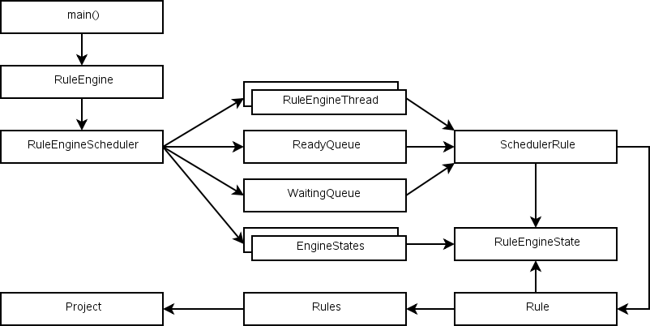

|
Home · Overviews · Reference · Classes | |

Currently there can only be 1 rule engine.
The engine has a single scheduler.
The scheduler manages multiple threads.
There is a queue for rules that are ready to run. Idle threads request rules to run from the scheduler.
There is a queue for rules that are waiting on prerequisites. Rules are reclassified as ready to run when the prerequisites complete.
The scheduler creates SchedulerRules (value-based) to track project rules. SchedulerRule is just a wrapper class around RuleEngineState.
Each RuleEngineState tracks an individual rule's progress. The class can exist with just a rule name. It has the executestate. It lists the prerequisite rules that are being waited on. It lists the input files (cached from the Rule?). It records the error state and description, plus the rule that caused the error (if it's a chain). Finally it holds the rule and the rule's name (another cache?).
Tools like Helgrind will complain about the locking process.
Rules are "owned" by either the scheduler (in which case they're protected by its lock) or by a thread (in which case they're protected by the thread's lock).
See also Overviews.
| Copyright © 2009 Trolltech | Qt Extended - QBuild Maintainer Guide |